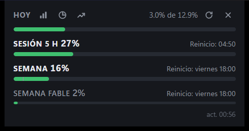
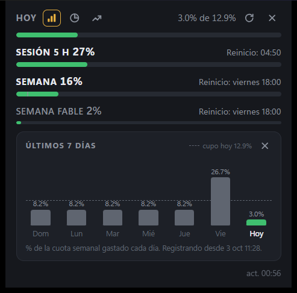
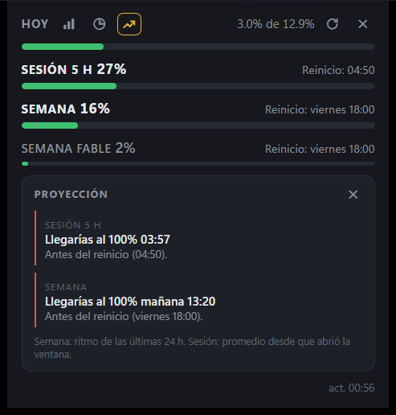
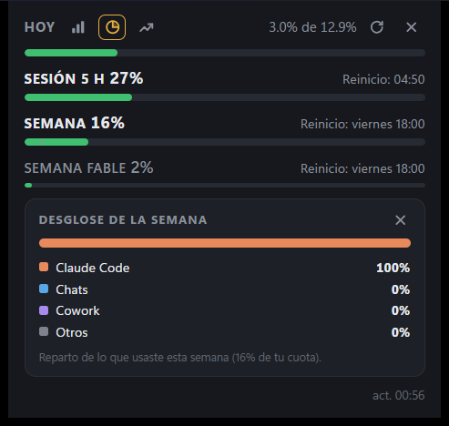
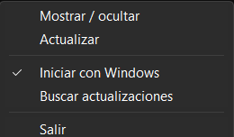

claude-usage-widgets
Widgets siempre visibles con tu uso de Claude: sesión de 5 horas, semana, límites por modelo, cuánto llevas hoy contra lo que te toca, en qué lo gastaste y cuándo llegarías al límite.
Descargar para Windows Código en GitHub
Hoy el uso se revisa a mano (/usage en Claude Code o la página de ajustes). Si trabajas cerca
del límite semanal conviene tenerlo a la vista, como la batería, para repartir la cuota en la semana y no
quedarte sin servicio a media semana. El widget lee los mismos números que Anthropic reporta:
lado a lado con /usage dan lo mismo.
Cómo se ve en Windows (datos reales)





Android: el widget en la pantalla de inicio
Dos tamaños, 4×1 y 4×2, con los mismos números que el escritorio. Se actualizan solos en segundo plano (cada ciclo completo, de despertar a repintar, tarda unos 200 ms) y llenan su celda sin recortarse. Lectura real del 4×2 en el teléfono de prueba:
Versión lite
Para quien solo quiere sesión y semana: una ventana nativa de Windows (Win32), un solo proceso y sin WebView. Ocupa ~3 MB de memoria frente a ~29 MB del widget completo (medido el 2026-10-10).
- Dos barras, sesión de 5 h y semana, con su reinicio y una marca de ritmo en la semana. Avisa al 50, 80 y 95 % de la cuota semanal.
- Desde la bandeja: intervalo de 3 o 5 min, siempre encima e iniciar con Windows.
- Descarga
claude-usage-widgets-lite_<versión>_x64.exedel mismo release y compáralo conSHA256SUMS.txt. Es portable: sin instalador y sin actualizaciones automáticas. - Tampoco lleva firma de Windows todavía: los mismos avisos de SmartScreen y antivirus de arriba.
Las capturas del widget de Android llegarán con su primer release.
Estado por plataforma
Windows
- Hecho: instalador
.exe/.msipor usuario, sin permisos de administrador; ventana sin marco siempre encima; icono en la bandeja; inicio con Windows; una sola instancia; recuerda la posición; español e inglés. - Hecho: actualización firmada desde la bandeja, solo cuando tú la pides.
Android
- Hecho: inicio de sesión en claude.ai, sesión guardada cifrada, widgets 4×1 y 4×2 con datos reales y actualización automática.
- En curso: pantalla de ajustes y cierre de sesión que borra todo, y APK firmado en GitHub Releases (instalable con Obtainium).
- Planeado: burbuja flotante.
Linux y macOS
- El mismo código de Windows compila en Linux (ya corre en el CI de Ubuntu). Falta empaquetarlo (AppImage, deb) y el llavero de macOS.
Instalar en Windows
- Necesitas un plan Pro o Max y Claude Code con sesión iniciada en esa PC. Con una clave de API no hay límites de plan que mostrar.
- Descarga el
-setup.exe(o el.msi) del último release y compara su SHA-256 conSHA256SUMS.txt:certutil -hashfile <archivo> SHA256. - Ejecútalo. Windows puede mostrar "Windows protegió su PC": Más información → Ejecutar de todas formas.
- Algunos antivirus con detección por IA marcan el instalador como sospechoso porque todavía no lleva firma de Windows (3 de 71 en VirusTotal, ninguno de los grandes). La firma se hará con un certificado de SignPath Foundation, gratuito para código abierto (en trámite); ver la Code signing policy.
- El widget aparece arriba a la derecha y deja un icono en la bandeja. Las nuevas versiones se instalan desde Buscar actualizaciones.
De dónde salen los datos
| Plataforma | Credencial | Consulta |
|---|---|---|
| Windows / Linux | El token que Claude Code ya guarda en ~/.claude/.credentials.json. Se lee en cada consulta y nunca se refresca (refrescarlo dejaría a Claude Code con uno inválido). | GET api.anthropic.com/api/oauth/usage |
| Android | Inicias sesión en la página real de claude.ai dentro de la app (solo por correo; Google bloquea los navegadores embebidos). La cookie se guarda cifrada con una llave del Android Keystore que no se puede extraer. | GET claude.ai/api/organizations/{org}/usage |
Las dos respuestas tienen la misma forma, así que las dos plataformas comparten el mismo modelo de datos.
Stack
| Windows (y Linux) | Android | |
|---|---|---|
| Base | Tauri 2 sobre WebView2 | Java puro, APIs del sistema, sin Gradle ni androidx; Android 12 o superior (minSdk 31) |
| Lógica | Rust: jiff (zonas horarias con tzdata incluida), ureq con rustls, serde | Java 8 de lenguaje, lector JSON propio con límites duros |
| Interfaz | HTML, CSS y JavaScript sin frameworks; la interfaz no recibe nunca credenciales | AppWidget con RemoteViews y JobScheduler; WebView solo para el inicio de sesión |
| Compilación | cargo + pnpm tauri; instaladores firmados en GitHub Actions | aapt2 + javac + d8 + apksigner, el mismo script en el teléfono (Termux) y en el CI |
| Comprobaciones | cargo test, clippy -D warnings, fmt en Windows y Ubuntu | corredor de pruebas propio en el dispositivo, mutantes, lint NewApi con canario en cada corrida |
Cómo se trabaja
- Un contrato compartido. Las reglas de cálculo (cupo de hoy, reparto por día, proyecciones, colores, relleno de la barra) están escritas en
spec/rules.mdy fijadas con 92 casos de prueba con el resultado calculado a mano. El núcleo de Rust (Windows) y el de Java (Android) se escriben por separado y los dos tienen que dar exactamente esos resultados en el CI. Dos implementaciones independientes del mismo contrato son las que encuentran sus ambigüedades: horario de verano, medianoche repetida, reinicio semanal a media jornada, comparaciones al milisegundo. - Diseño, especificación y plan antes del código. Lluvia de ideas, especificación, y un plan por oleadas, fases y tareas pequeñas con pruebas primero.
- Una revisión independiente por fase. Cada fase cierra con un pull request y una revisión de un modelo que no escribió el código: recalcula los casos, intenta romperlo con entradas hostiles y verifica la seguridad. Lo que se corrige se vuelve a revisar, y nada entra a
mainsin los cinco controles del CI en verde. - Comprobaciones que se ven fallar. Cada prueba nueva se estrena rompiendo a propósito lo que vigila (mutantes), para que no pase en vacío.
- Pruebas contra el sistema real. El widget de Android se prueba en el teléfono, no solo con dobles: así apareció un permiso que faltaba y sin el cual el widget no se habría actualizado nunca.
- Dos sesiones de Claude Code. Una en la PC orquesta el repositorio, construye Windows y publica los releases en borrador; otra corre en el propio teléfono Android (Termux), compila, instala y prueba la app en el dispositivo. Se coordinan con memos, se revisan el trabajo una a la otra y el código solo viaja por GitHub. Las decisiones de producto y la publicación de cada release las toma el dueño del proyecto.
Seguridad
| La credencial nunca sale del dispositivo: no se escribe en logs, errores ni historial, y la interfaz nunca la ve. |
Red: solo api.anthropic.com y claude.ai. Única excepción: github.com cuando tú pides buscar una actualización. Cero telemetría. |
| Windows: política de contenido estricta (sin scripts en línea) y permisos mínimos para la interfaz, fijados por una prueba. Las actualizaciones solo se instalan si traen la firma del proyecto y su versión. |
| Android: cookie cifrada con el Keystore, sin respaldo en la nube, sin tráfico sin cifrar, navegación del inicio de sesión limitada a claude.ai. |
| Releases firmados con sumas SHA-256; acciones del CI fijadas por commit y dependencias vigiladas por Dependabot. |